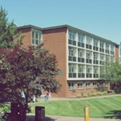
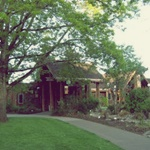
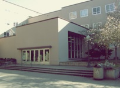

Allen |
Anstett |
Autzen Stadium |
Barnhart |
Bean |
Bowerman Family |
Canoe House |
Carson |
Casanova Center |
Cascade |
Cascade Annex |
Chapman |
Chiles
Clinical Services |
Collier House |
Columbia |
Computing |
Condon |
Deady |
Deschutes |
Earl |
Education |
Erb Memorial Union |
Esslinger |
Fenton
Ford Alumni Center |
Frohnmayer Music |
Friendly |
Gerlinger |
Global Scholars Hall |
Hamilton |
Hayward Field |
HEDCO Education |
Hendricks |
Huestis |
Jaqua
Johnson |
Knight Law |
Knight Library |
Klamath |
Lewis Integrative Science |
Lillis |
Living Learning Center |
Lokey Laboratories |
Many Nations Longhouse
McKenzie |
Matthew Knight Arena |
Museum of Natural & Cultural History |
Moshofsky Center |
Schnitzer Museum of Art |
Olum |
Onyx Bridge |
Oregon |
Pacific
Peterson |
Prince Lucien Campbell |
Spencer View |
Student Recreation Center |
Straub |
Streisinger |
Susan Campbell |
Health Services & Counseling |
Villard
Volcanology |
Walton |
Willamette |
Allen Hall
1893. UO curriculum in Journalism begins.
1912. Department of Journalism, one of nation's first, is created.
1922. Design work takes place in August for the Journalism Building. The journalism program had been housed in the Old Gym and Annex which burned in July 1922. Construction begins in October.
1923. Construction ends in September.
1936. A stone bas relief by Louis G. Utter is placed over the south entrance.
1953. McClure Hall is demolished to make way for a new journalism building. The McClure Annex (called the Journalism Building) remains.
1954. The new Allen Hall opens. Substantial renovations to the existing Journalism Building took place during construction. Vestiges of a balcony over the east entrance can still be seen.
1990s to the present. Several phases of renovation rework the interior and grounds of Allen Hall.
1999. UO's leasing of the Baker Downtwon Center freed more space when University Printing left Allen Hall.
2012. Construction is completed on Allen Hall renovation and expansion.
2013. Renovated and expanded Allen Hall opens for winter term 2013. Grand opening, March 1, 2012.
Anstett Hall
1893. UO curriculum in Journalism begins.
1912. Department of Journalism, one of nation's first, is created.
1922. Design work takes place in August for the Journalism Building. The journalism program had been housed in the Old Gym and Annex which burned in July 1922. Construction begins in October.
1923. Construction ends in September.
1936. A stone bas relief by Louis G. Utter is placed over the south entrance.
1953. McClure Hall is demolished to make way for a new journalism building. The McClure Annex (called the Journalism Building) remains.
1954. The new Allen Hall opens. Substantial renovations to the existing Journalism Building took place during construction. Vestiges of a balcony over the east entrance can still be seen.
1990s to the present. Several phases of renovation rework the interior and grounds of Allen Hall.
1999. UO's leasing of the Baker Downtwon Center freed more space when University Printing left Allen Hall.
2012. Construction is completed on Allen Hall renovation and expansion.
2013. Renovated and expanded Allen Hall opens for winter term 2013. Grand opening, March 1, 2012.
Autzen Stadium
Original Structure (1967). Architect: Skidmore Owings and Merrill.
In 1959 , UO participated with the city, county, and utility company in the purchase of over 560 acres north of the Willamette made available by the State Highway Commission for recreational purposes. Plans for a new stadium commenced and a successful fund drive quickly provided funds. The firm SOM explored Hayward Field as a site option but selected the new site based on planning, transportation, and economic concerns.. The stadium, costing approximately $3 million, and taking only 9 months to build, was creatively designed within an artificial crater, avoiding the need for multilevel ramps. The 41,000 stadium, was named for the Autzen Foundation, headed by UO alumnus Thomas Autzen, who contributed to the project.
Addition and Renovation (2003). Architect: Ellerbe Becket (Kansas City MO). Hunt/Wildish Construction. Project Planner: Chris Ramey. Project Manager: Charlene Lindsay.
The $90 million expansion of the 1967 facility increased capacity from 41,700 to 58,000 seats. Renovations included seating, skyboxes, and improved accessibility, circulation, concessions, restrooms, and press facilities. Hunt Construction Group won an Award of Excellence Citation (Public Project) for its efforts.
Barnhart Hall
1966. College Inn opens.
1975. College Inn is acquired by UO and renamed University Inn.
In 2001, the building was named after H. Philip Barnhart, University Housing Director emereitus, who was housing director from 1951 to 1979.
Bean Complex
Architect: Wilmsen, Endicott, and Unthank.
This structure, at 15th and Moss, was named for Robert Sharp Bean, UO grad who was Oregon Supreme Court Chief Justice (1882-90). Units within complex are named for former faculty: Parsons, Thornton, Caswell, DeBusk, Ganoe, Henderson.
Bowerman Family House
Donated to the University of Oregon by track coach legend, Bill Bowerman, the 7,000 square foot building opened in 1991.
Carson Hall
This five-story brick building was constructed as part of a $6 million post-war building program. Named for Luella Clay Carson, Professor of English and Elocution (1888-1909) and Dean of Women (1895-1909), the building was acclaimed as an innovative approach to student housing.
Design work began in Feb 1945 and construction ended in Jan 1949. According to the Ellis Lawrence Building Survey, Ellis F. Lawrence approved the preliminary design which was accepted a few days before his death.
Casanova Center
Named after longtime football coach and athletic director, the 102,000 square foot facility, part of the Autzen Stadium complex, cost over $12 million. Complex includes sculpture by Greenamyer.
Cascade Hall
Architect: Ratcliff Architects
1985. The planning team of The Ratcliff Architects, Moore Ruble Yudell, and McLellan & Copenhagen began work at the University on the new Science Complex.
1987. Groundbreaking for the new Science Complex, including Willamette Hall, took place April 7, 1987.
1989. Willamette Hall was dedicated on Oct. 16, 1989, in a ceremony that included Governor Neil Goldschmidt and Senator Mark Hatfield. Environmental protestors, positioned throughout the atrium, enlivened the ceremony. Willamette Hall was the centerpiece of the $45.6 million project that included Cascade Hall, Deschutes Hall, Streisinger Hall.. Funding for the four new buildings came primarily through a Department of Energy grant made possible through the work of Governor Victor Atiyeh and Senator Mark O. Hatfield. The four story atrium, named after UO's 13th president, Paul Olum, is one of the most impressive interiors on campus.
1990. Cascade, Deschutes, Streisinger, and Willamette halls open for Winter Quarter, 1990.
Cascade Annex
Architect: Ellis F. Lawrence.
Former name: Physical Plant Shops.
Finished by May 1946, this building paralleled the Press Building. At one time it housed the Museum of Natural History and Herbarium. Onyx Bridge now rests atop part of it. Lawrence was no longer associated with a firm when he designed this utilitarian building.
Chapman Hall
Original Structure (1939). Architect: Lawrence, Holford, Allyn.
This building was named for Charles H. Chapman, 2nd UO president. Among other uses in its history, it housed Home Economics and the Student's Co-operative Store (a forerunner of the UO Bookstore). Chapman Hall was Lawrence's last work on the Memorial Quadrangle and was compatible in design to its counterpart, Condon Hall, of 1925. Chapman Hall exhibits the last use of architectural terracotta on the UO campus.

Collier House
Owned by George Collier, this house was completed in May 1886. The overhanging low roof with supporting decorative brackets and narrow windows are among features that give this home an "Italianate" appearance.
In 1896, UO purchased Professor Collier's home to house women but it was used instead for the growing library, which numbered 7,000 volumes. The second floor of the house was used as the president's residence.
1930. The Collier House barn was razed. "Barn Hall" had been renovated for classroom use and in early years was a site for engineering and the observatory.
In 1950, the garage was razed.
1962/63. Architect: Wilmsen, Endicott, Unthank.
Alterations to the 'Faculty Club' included the addition of a dining room.
2004. Collier House refurbished to house Music faculty offices, events.
Columbia Hall
Architect: Lawrence, Tucker, and Wallmann
Columbia Hall opened in 1961. It was built as an extension of the science building, now named Pacific Hall, to which it is connected by a bridge. According to UO Campus Planning and Real Estate, its historic name is "Geology Building." Columbia Hall's auditorium space, once UO's largest, is built upon the foundation of a swimming pool which occupied the bottom floor of the gymnasium that formerly occupied this site. Columbia Hall's facade features a basalt sculpture by Steve Gillman, artist and UO graduate.
Condon Hall
Architect: Lawrence and Holford. Chief Designer: Ellis F. Lawrence. Contractors: Trancell & Parelius (Portland); Alaska Plumbing & Heating Co.; Rushlight, Hastorf, Lord (Plumbing); Morrison Electric Co. (wiring).
Original Structure (1925). Completed in August 1925, the "Science" building was named for Oregon geologist Thomas Condon.
Renovations (1954).
South Addition (1967) . Architect: Stanton, Boles, Maguire, and Church. The architects were contemporaneously involved with the design of Prince Lucien Campbell Hall.
West Fire Escape (replacement) (1975)
Deady Hall
1873. Construction begins on the university's first building. The problematic construction, plagued by insufficient funds, is covered in detail in Sheldon (see Bibliography).
1876.
When"The Building" opened on October 16, 1876, UO's enrollment was 177 and faculty numbered five, including John Wesley Johnson, the first president. As Eugene had no high school, the student body included 98 students in the preparatory department (grade and high school), and 79 enrolled in college level courses.
1891-92. The building's corner urns and balustrade were removed when it was discovered they were rotting.
1893.
The "Old Building" was named Deady Hall for Matthew Deady (1824-93), judge of the Territorial Supreme Court from 1853 to 1859. He also presided over the State Constitutional Convention in 1857. In 1859, Deady was appointed U.S. District Judge for Oregon. Deady served as president of UO's Board of Regents (1873-93). He compiled and annotated the General Laws of Oregon in 1866.
1914. Renovation converted Deady's original three stories into five.
1972. Villard Hall and Deady Hall are added to the National Register of Historic Places.
1977.
Deady Hall and Villard Hall are designated National Historic Landmarks, among fewer than 2,500 places that bear this distinction. National Historic Landmarks possess exceptional value or quality in illustrating or interpreting the heritage of the United States.
Deschutes Hall
1985. The planning team of The Ratcliff Architects, Moore Ruble Yudell, and McLellan & Copenhagen began work at the University on the new Science Complex.
1987. Groundbreaking for the new Science Complex, including Willamette Hall, took place April 7, 1987.
1989. Willamette Hall was dedicated on Oct. 16, 1989, in a ceremony that included Governor Neil Goldschmidt and Senator Mark Hatfield. Environmental protestors, positioned throughout the atrium, enlivened the ceremony. Willamette Hall was the centerpiece of the $45.6 million project that included Cascade Hall, Deschutes Hall, Streisinger Hall.. Funding for the four new buildings came primarily through a Department of Energy grant made possible through the work of Governor Victor Atiyeh and Senator Mark O. Hatfield. The four story atrium, named after UO's 13th president, Paul Olum, is one of the most impressive interiors on campus.
Cascade, Deschutes, Streisinger, and Willamette halls open for Winter Quarter, 1990.
Earl Complex
Architect: Church, Newberry, and Roehr.
Virgil D. Earl Hall, also known as Earl Complex, was designed, like the adjacent Straub Hall, to house independent living units. Construction began in April 1954 and ended in November 1955. Its design reflected the post-war interest in International Style geometric simplicity. Funded in part by dormitory fees and the sale of World War II trailers, this housing unit was named for Virgil D. Earl, UO alumnus and Athletics Director (1923-31) and Dean of Men (1931-48).
Earl Hall is made up of units named for former faculty: Edgar McClure (Chemistry), Davis Walter Morton (first dean of Business Administration), Frederick George Young (first dean of Graduate School), Orin Fletcher Stafford (Chemistry Department head), Henry Davidson Sheldon (founder of Oregon State Teachers Assoc., first dean of School of Education).
Education Buildings
1916. The original Education Building opens. Designed by Ellis F. Lawrence, it is now Peterson Hall.
1921. University High School (Education Building). Architect: Lawrence & Holford.
Construction began in Sept. 1920 and ended the next March. This lab school for educating teachers became a high school when it relocated from the 1916 Education Building to its new structure at the same time that the School of Education relocated to its adjacent new building. In 1953 the School took over the building for classroom use. An open-air gym was once attached to the structure.
1921. Education Building. Architect: Lawrence & Holford.
Construction ended in April 1921 for this work which replaced the 1916 Education Bldg (Peterson Hall) as home for the School. The Education ensemble included University High School and an open-air gym organized around a courtyard.
1980. Education Addition (South Bldg, courtyard, covered walkway). Architect: Martin Soderstrom Matteson. Builder: John T. Moody & Sons.
The building, whose design work began in 1978, represented the first project on campus to use the 'pattern language' approach to design developed by Christopher Alexander in his books, The Oregon Experiment (1975), A Pattern Language (1977), The Timeless Way of Building (1979). The building includes a commons and scholar's walk, once traditional in academic buildings. The principal architect, Will Martin (a UO graduate), designed Portland's Pioneer Courthouse Square, which opened in 1984. Martin died in a plane crash that year.

Erb Memorial Union
Original Building (1950). Erb Memorial Union. Architect: Lawrence & Lawrence. Design work began in Jan. 1945 on the long-desired student union. Plans were initially developed by H. Abbott Lawrence, son of Ellis. F. Lawrence, who briefly held the partnership Lawrence and Lawrence until Ellis Lawrence's death in 1946. Design work ended by Aug. 1948. Early concepts included a high-rise hotel. Construction began in Oct. 1948 and ended in 1950. Planned for 25 years, Lawrence, Tucker & Wallman revised the plans after Lawrence's death. The building was named for Donald Erb, UO war-time president, who died in office in December, 1943, at age 43. It also commemorated members of the UO community and graduates who served during the war.
Northeast Addition (1962).
West Addition (1973). Architect: Coburn and Sheldon, Lutes and Amundsen. As described in Style & Vernacular (below): "The quiet elegance of the original building is a good foil to the exuberant addition with its skylighted, promenade ramp and lively detailing...The diagonal path under the building forms a gateway linking the active central campus with the interior residence lawns to the south and east."
Interior Renovation (Fishbowl) (1980).
Ballroom Alterations (1986)
Amphitheater (1998). Landscape Architect: Cameron McCarthy Gilbert & Scheibe. Project Planner: Fred Tepfer. Manager: Garry Fritz. Initiated by ASUO to commemorate that organization's 100th anniversary, this project created an amphitheater and stage. Its design involved strong involvement with user groups of students, faculty, and staff. The 'free speech plaza' was long envisioned as part of the EMU's features and this project restored that concept which alterations after the 1950 original design impeded.
Esslinger Hall
Construction ended in December 1936 on the new Physical Education building, a PWA project. At the entrance are two cast stone urns by PWA artist Walter Pritchard. The P. E. Building was later joined to the enclosed Leighton Pool and nearby McArthur Court. In 1970 the building partially burned, and was rebuilt. In 1975, the P. E. Building was named after Arthur A. Esslinger. In the 1990s, Esslinger Hall underwent renovation and expansion as the new Student Recreation and Fitness Center developed.

Fenton Hall
Original Building (1906). Architect: Yousa D. Hensill.
UO's first building dedicated for library purposes is today's Fenton Hall. The Libe, as it was known, originally housed 53,000 volumes. An endowment established by UO's benefactor Henry Villard (which exists to this day) substantially supported acquisitions. Library collections were previously housed in Collier House, Condon Hall, Deady Hall, and Friendly Hall before this building existed. The second floor of the structure (known unofficially as Johnson Hall until the 1915 Administration Bldg. opened) and the basement were initially used for classrooms or offices. The library's location at the increasingly busy 13th Ave. made it a focal point of campus activity. The pathway from it to Villard was known as "Hello Walk". Changed over time has been the entrance which was originally more ornate.
Rear Addition (1914). Architect: William C. Knighton.
Stacks were added to the west side of the Library and the façade and interior were altered in 1914. Architect Knighton altered the entrance which originally featured a gabled portico supported by two monumental wood columns. Knighton's decorative detailing on the 1914 addition included a form of the inverted keystone found on several of his works, including his Johnson Hall of 1915. This wing continues to store library materials.
Renovation (1936). Architect: Lawrence & Holford.
While the new Library (now Knight Library) was nearing completion, WPA funding enabled the existing one to be remodeled to house the Law School. The Law School was originally established in 1884 in Portland and moved to Eugene in 1915. Wayne Morse, later Senator, was Dean of the school when Ellis Lawrence renovated the "Old Libe". In 1938, the building was renamed Fenton Hall after Judge William D. Fenton, an early UO benefactor.
Ford Alumni Center
In 2006, a user group, comprised of representatives from the Alumni Association, UO Foundation and Office of Development, formed to begin working on designs for an alumni center for the university. In May 2011, the Cheryl Ramberg Ford and Allyn Ford Alumni Center opened. In addition to its function as home of the UO Alumni Association, the Ford Alumni Center is a gateway to the university. Its tenants also include the University Office of Development, the University Foundation, and student orientation programs. The ground floor serves as a starting point for campus visitors and prospective students and includes interactive multi-media displays that inform about the university's history. Other spaces include an atrium, conference rooms, lounges, and flexible meetings spaces. Concurrently constructed with the Matthew Knight Arena, which reflects its exterior design, the alumni center rests above a large underground parking facility. The alumni center is registered for LEED Gold certification and is the winner of an International Interior Design Association Honor Award.
Frohnmayer Music Building
Original Architect: Lawrence & Holford.
1924. Original Structure. Architect: Lawrence & Holford.
Construction began in Nov. 1922 and ended Nov. 1924. The auditorium (Beall Hall) was the last part completed; other parts of the building had opened by then.
1948. South Addition. Architect: Wick , Hilgers, and Scott.
1955. Addition. Architect: Wick and Hilgers.
1977. North Addition and Remodeling. Architect: Broome, Oringdulph, O'Toole & Rudolf (BOOR/A).
Friendly Hall
Architect: Whidden and Lewis.
Finished in 1893, this three story red brick building was conceived to be co-ed, with two main entrances, one to south for men and one to north for women. A large dining room existed in front and between two entrances. Frequently adapted and altered: additions came in 1914, 1920, and 1924, and remodelings in 1933, 1951, and to this day. In 1915, the building was named for Samson Friendly (1883-1915), a Eugene merchant and member of the Union University Association which established the university. Friendly Hall ceased being a dorm in 1928 when Straub Hall opened

Gerlinger Hall
Construction began in August, 1919, and ended in May 1921. Named in 1929 for Irene H. Gerlinger, the first woman Regent and avid fundraiser and advocate for the University of Oregon. Gerlinger managed a successful campaign to build the Woman's Building and was involved its decoration and design. The Alumni Hall in Gerlinger is among UO's few remaining historic interiors. Gerlinger Hall, Susan Campbell Hall, and Hendricks Hall were added to the National Register of Historic Places on Oct. 2, 1992, as the Women's Memorial Quadrangle Ensemble. From Shellenbarger's Ellis Lawrence Building Survey, "Irene H.Gerlinger, for whom this building was named in 1929, was the 1st woman Regent of the U0 . She ran the campaign to build it and was deeply involved in its design and decoration . She described it as "a monument to noble womanhood", and it is a landmark to the emerging roles of women in the 20th century . Famed architect John Galen Howard wrote of its "rare charm" & its "new note" in adapting English & New England prototypes into a "truly indigenous character. Together with Hendricks and Susan Campbell Halls, the 3 buildings form what ma y be Lawrence's most successful architectural ensemble . The exteriors of all 3 buildings are essentially intact . The major interior spaces of Gerlinger Hal l Alumni Hall, Gymnasium, & south gallery, are essentially intact; they are among only a handful of fine historic interiors remaining on campus (though altered by the painting of Alumni Hall and new light fixtures in the gallery) . Except for 3rd floor dormitory use in 1945-?, building use has little changed."

Hamilton Complex
Opened in 1962, this structure was named for Judge James W. Hamilton, member of the Board of Regents and BOR president (1913-25). The building consists of 10 housing units named for former faculty: Boynton, Cloran, McClain, Tingle, Spiller, Robbins, Dunn, Collier, Burgess, Watson.
Hayward Field
1919. East Grandstand is completed.
1921. Track and Field program begins competing at Hayward Field.
1925. West Grandstand is completed. Architect: Lawrence & Holford.
1970. The track is widened from six to eight lines and a weather-proof surface is applied.
1975. West Grandstand is restored.
The restoration of the Hayward Field West Grandstand was completed in 1975. Substantial support for the project came from gifts and a special fundraising track meet in which Steve Prefontaine ran.
1988. Renovations include a 400-meter track and updated facilities.
1991. A new scoreboard is added.
1992. The Bowerman Family Building is completed.
2005. Powell Plaza is created to provide a more attractive gateway to the historic Hayward Field.
Hendricks Hall
Construction began on the women's dormitory in July 1917 and was completed in February of 1918. Named for T. G. Hendricks, grocer, then banker, who was instrumental in raising funds for Deady Hall's construction. The building, which accommodated 112, was in the "Georgian Colonial" style Lawrence prescribed for works outside of the main quadrangle. Mary Spiller Hall was connected through the dining room (Refectory). Remodeled in the 1970s to house offices.

Huestis Hall
Architect: Skidmore, Owings, and Merrill.
Dedicated on May 7, 1973, "Science III" was renamed in 1986 for Ralph Huestis, a UO professor of biology from 1924 to 1962. Science III augmented the growing Science Complex, consisting of Science I (to be renamed Pacific), Science I East Wing (Onyx Bridge), Science II (Klamath Hall), the Geology Building (Columbia Hall), Volcanology, and the Science Library.
Johnson Hall
Architect: William C. Knighton.
1915. Built at a cost of $100,000, the Administration Building opened in 1915. It housed, in addition to administrative functions, the Condon Geological Collection, as well as the 200-seat Guild Theater. Architect William Christmas Knighton was Oregon's State Architect and responsible for several significant works in Oregon, including Deepwood, the historic home near Salem. Interior decorative details included a magnificent skylight which covered the entire center of building and was made of stained glass by the Povey Brothers of Portland. (The Povey Bros also designed the glass of First Church, downtown Eugene.) Terracotta details from this building include the UO Logo.
1918. The building was named after UO president John Wesley Johnson in 1918.
1949. Renovation eliminated Guild Theater whose function was replaced by the new University Theater (Robinson Theater at Villard Hall). Glass panels were dispersed; some were used at Erb Memorial Union.
1985. Johnson Hall was added to the National Register of Historic Places.
1998. Renovation included restoration by Don Peting's historic preservation students of stained glass panels that once formed a skylight in the 1915 building. Panels can be seen in the boardroom of Johnson Hall and in a hallway of Lawrence Hall.
Knight Law Center
The new law center was named for 1932 UO graduate and father of Philip Knight, a founder of Nike and UO benefactor. This building replaced what is now known as McKenzie Hall as the home of the law school and library. The law school was first housed in Fenton Hall.
Knight Library
Original Structure(1937). Architect: Lawrence, Holford, and Allyn.
By the mid-1920s, the "Old Libe"( now Fenton Hall) had inadequate space to hold library materials even with its 1916 addition. Library collections were stored in several campus locations, including the second floor of Condon Hall. As a consequence of the Depression, Librarian Matthew Douglass with the strong support of Senator Fred Steiwer as able to obtain funding for a new library as a Public Works Administration project. The cost of the library, approximately $460,000, was paid through US gifts and loans and support from alumni and friends -- no state funds were expended for construction. Construction began on September 17, 1935; the new building opened on May 3, 1937. The Library terminated the south axis of Lawrence's plan which originally envisioned a Memorial Auditorium at that site. Significant additions were added in 1950, 1966, and 1993/94 but the exterior integrity, and much of the interior design, remains intact. In the Ellis Lawrence Building Survey, architectural scholar Michael Shellenbarger called the Library "a monument to the depression era PWA and WPA programs which financed it, " and "one of Oregon's best examples of the integrated art and architecture that characterized that last great surge of public building before WWII and the postwar period when such buildings were no longer in favor." The Library's rich interior features work by Fredrick Baker (lighting), Brownell Frasier (interior and textiles), exterior sculpture (Edna Dunberg and Louise Utter); ironwork (O. B. Dawson), landscaping (Fred Cuthbert); and murals (Arthur and Albert Runquist), among many others.
Addition (1950). Architect: Lawrence, Tucker and Wallman.
Addition (1966) . Architect: Clare K. Hamlin and B. King Martin.
This addition added 100,000 sq.ft. to the 1937 building.
Addition and Renovation (1994). Architect: TBG Architects and Planners (Eugene); Shepley Bulfinch Richardson Abbott (Boston), design consultants.
The third addition to the 1937 facility added 132,000 square feet. Additions were completed by 1993 and substantial renovations were finished by the summer, 1994. The $27,000,000 award-winning project was enriched by extensive Percent for Art acquisitions. As a priority for the Campaign for Oregon fundraising initiative, a third of the building's cost came through private and corporate gifts. In 1994, the building was named in honor of the family of Philip Knight, President and CEO of Nike, Inc.
Klamath Hall
Architect: Skidmore Owings and Merrill.
This 1967 building was originally called Science II (with the current Pacific Hall being Science I). An architect's model published in Old Oregon 45 no. 4 (Jan.-Feb. 1966), p. 7, shows the clean geometric patterns and shapes, favored in the 1960s, that sometimes look best in small-scale models. The later Science III is now called Huestis Hall.
Lawrence Hall
1901
Mechanical Hall. Architect: Edgar Lazarus.
Part of this building, where engineering courses were taught, also housed UO's heating plant. Sometimes refered to as Commerce, Sociology, or Engineering Building as it housed those programs before its use became dedicated to architecture.
1914
Architecture Building. Architect: William C. Knighton
This building was constructed to the east of the 1901 Mechanical Hall and was designed to be similar in appearance to that building. It was larger and lacked Mechanical Hall's cupola. Knighton connected the two structures with a one-story addition.
1923
Architecture Building Expansion and Renovation. Architect: Ellis F. Lawrence
Ellis Lawrence consulted with W. R. B. Willcox, the new head of the architecture program (from 1922), about the renovation and enhancement of the existing structures to house the growing School of Architecture and Alllied Arts.
Changes included:
Courtyard additions, including bay window and ambulatory;
Addition of 2nd floor over north wing that connected the 1901 and 1914 structures. This floor provided library space and more drafting areas.
Removal of cupola on the 1901 structure (Mechanical Hall) and application of stucco to the entire ensemble, to give a uniform, Mediterranean-style appearance.
Arts Wing. Architect: Ellis F. Lawrence. Construction ended in June 1923 on this wing (to the south) of the Architecture building which housed art studios and a gallery. The wing formed a courtyard with the existing structures. Decorative detailing, mostly by students, enriched the structure which was destroyed in 1955. As stated in the Ellis Lawrence Survey, "This is the only major UO campus building by Lawrence which no longer exists; decorative art works were destroyed except for fragments of south wall tile panels."
Pictures. In the late 1980s, students of Michael Shellenbarger created a model of the Art and Architecture Building. This model is in the lobby of Lawrence Hall.
Some pictures of the model: North facade, 1; East facade, 1, 2, 3; South facade: 1, 2, 3; West facade, 1; Courtyard, 1, 2, 3.
1940/41
Two wings were added to the north which extended the west facade and added studio space.
1957
Addition. Architect: Annand, Boone, and Lei. This structure replaced the Arts Wing (south structures) of the Architecture and Allied Arts Building with a modernistic structure featuring metallic siding. The building was renamed Lawrence Hall in honor of the legendary dean and campus architect and planner. The building was dedicated in April 1958.
1971
Addition. Architect: Campbell Yost Grube Hall.
Like some parts of the contemporary Law Center (McKenzie Hall), the towering 1970s addition to Lawrence Hall featured the exposed concrete formwork of the 'Brutalist' style. The addition provided well-lit studio space and reinforced connections with other buildings that now make up the Lawrence Hall amalgamation: the 1924 Power Plant, the Lazarus (1901) and Knighton (1914) designs, the Ellis Lawrence 1920s renovations, and the 1950s south addition by Annand, Kennedy, and Lei. In th 1990s, the firm Yost, Grube, Hall would design the third Law Center on campus.
1991
Addition. Architect: BOORA.
The 1991 addition to Lawrence Hall, which features the impressive Architecture & Allied Arts Library and Visual Resources Collection, substantially changed the building's south façade. The library's reading room is named for Marion Dean Ross, architectural historian and first chair of the Art History department, who died in 1991 and left a large bequest to acquire architectural books.
Lewis Integrative Science
2010. Groundbreaking. Construction began in August 2010.
2012. Open House, Oct. 26, 2012.
Lillis Business Complex
Architect: SRG Partnership. Lease Crutcher Lewis Construction.
The new home of the Lundquist College of Business, the 133,000 sq. ft. four-story building was designed to meet LEED (Leadership in Energy and Environmental Design) Silver certification and features many sustainable design elements such as perimeter daylighting, recycled building materials and energy-efficient mechanical systems. The most prominent sustainable component of the project employs photovoltaic cells inlaid in the building's four-story glass entryway.Designed to harness energy from the sun, these cells generate electricity used to power the building. The large atrium respects the north-south axis from Dad's Gates on 11th Ave. to Knight Library. Creating the new complex required razing Commonwealth Hall and reconnecting Gilbert Hall (formerly Commerce) and Peterson Hall (formerly Gilbert West, Oregon Hall, Education). The sculpture Wind Fence was added in 2004.
Living Learning Center
An innovative living space for students, the Living Learning Center opened to students in September 2006. A grand opening event took place November 4, 2006. The LLC is the first residence hall built at UO since 1963.
Lorry I. Lokey Laboratories
An underground structure, located between Huestis Hall and Deschutes Hall, is under construction. One of its uses will be for researchers associated with the Oregon Nanoscience and Microtechnologies Institute (ONAMI).
Many Nations Longhouse
Architect: Johnpaul Jones.
The longhouse is a community center traditional to many Native American peoples in the Pacific Northwest and around the country. The new longhouse (1630 Columbia Street) replaces a former WWII temporary building that served that purpose since the 1960s. It was dedicated on Janurary 11, 2005. The architect, Johnpaul Jones, is a 1967 UO architect, a Native American born in Oklahoma. His firm's work includes the National Museum of the American Indian, Washington, D. C.
McKenzie Hall
Architect: Wilmsen, Endicott & Unthank. Constractor: Todd Building Co.
1968. Groundbreaking took place November 20, 1968, for the new Law Center, built on the site of 'Carson's Lake'.
1970. Finished in October 1970, the geometric forms of the Law Center, reflected its interior functions, and the ochre coloring alluded to the former home of the school, Fenton Hall. The building was officially dedicated on September 25, 1971. Architects H. Robert Wilmsen, Charles W. Endicott, and DeNormal Unthank were graduates of the School of Architecture and Allied Arts.
1999. The building was renamed Grayson Hall in 1999 and underwent renovations that were completed in 2000.
2000. Renovations. Architect: SRG Partnership. Construction: Wildish. Planner: Fred Tepfer. Project Manager: Janet Lobue. Landscape: Cameron McCarthy Gilbert & Scheibe.
2002. Grayson Hall was renamed McKenzie Hall.

Museum of Natural & Cultural History
Architect: Ratcliff Architects
1987. The museum was dedicated on Dec. 12, 1987, with Native American rituals. The former building, housed in one of the structures now under Onyx Bridge, was razed to make room for the new science complex and grounds. The anthropological collections have had other campus locations throughout their history. Funding for the science complex partly supported creating the museum structure at a new site. Percent for Art work for the Museum included the first architecturally-integrated sculpture since Allen Hall's plaques of 1954.
2004. The name of the museum changes to Museum of Natural and Cultural History in July 2004.
2004. Interior renovation. Engineers: Balzhiser and Hubbard Engineers; Bill Shaw, design architect. Gallery spaces: Presentation Design Group. Murals: Don Prechtel. Project Planner: Chris Ramey. The museum closed during the renovation.
Project Manager: Ken Blanchard.
2005. On Feb. 11, the renovated museum hosts a grand opening.
Moshofsky Sports Center
Architect: WBGS Architects & Planners (Eugene); Chambers Construction.
The $12.5 million indoor practice facility was the first of its kind in the PAC 10.
Jordan Schnitzer Museum of Art
Original Structure (1930). Architect: Lawrence, Holford, Allyn and Bean. Chief Designer: Ellis F. Lawrence.
Engineers & Consultants: Sydney B. Hapslip, George S. Reed (Mech. Eng.), Arthur L. Peck (Oregon State College, landscaping). Contracts: Ross B. Hammond, Inc. (Portland), Eugene Foundry & Machine Co., Urban Heating Co. (Portland, Portland Heating and Plumbing, Willamina Pacific Brick Co., Ernest Thomas Cast Stone Co. Artists and Designers: I.K. Tuerck (Main doors & ironwork), Richard W. Bock (courtyard stone capitols & cast stone lunette panels), Oliver Barrett (courtyard stone sculpture).
Design work began in January 1925 for this structure which was initially conceived to house the donated collection of Mrs. Murray Warner. Construction began in May 1929 and ended in August 1930. Mrs. Warner's concerns about security delayed its opening until 1932. Chief fundraiser Irene Gerlinger had intended the building to be named for former president Prince Lucien Campbell, but Mrs. Warner did not want the structure named for any single person. Instead, the interior courtyard was named for Campbell. During the planning stages, it was also known as the Murray Warner Art Museum, Prince Lucien Campbell Memorial, and the Fine Arts Building.
"One of Lawrence's finest buildings, the Museum of Art combines an exotic blend of Modernistic, oriental and European styles which is unique in Lawrence's work. (He refered to the meeting of eastern and western civilizations on the Pacirfic coast.) The plain and boldy massed rear resulted when only the 1st stage was built; Lawrence thought it would look "a fright" without the unbuilt wings, but Frank Lloyd Wright praised the rear during his visit to the campus in 1931. The peaceful courtyard, a memorial to PResident P. L. Campbell, assembles artwork by faculty & students of the School of Architecture and Allied Arts--including Richard Bock who created much of Frank Lloyd Wright's early architectural sculpture. The buliding is significant for its early use of innovative features which later became widely used in museums: the lack of exterior windows, and aritificial lighting and ventilation. The Museum of Art was built by public donations to house the Murray Warner colleciton of oriental art."
-- "Museum of Art," v. 2 (Eugene), Ellis Lawrence Building Survey.
The Museum of Art was listed on the National Register of Historic Places on June 5, 1986.
Addition (2004+). SRG Architects with design consultants Hammond, Beeby, Rupert, and Ainge, Chicago. Construction Firm: Wildish Building Co. Project Planner: Chris Ramey. Project Manager: Alex Gordon.
This addition to the original 1929-30 museum nearly doubled its size and enabled expanded gallery space, an educational suite, an interactive discovery gallery, a café, an enlarged museum store, and a hall available for public rental. In May 2004, the building was renamed the Jordan Schnitzer Museum of Art in honor of the donor who has committed a multimillion dollar endowment in support of the renovation.
Vivian Olum Child Development Center
Architect: De Norval Unthank Architect.
Completed in 2000. For information about the center, visit its website.

Onyx Bridge
An east wing to the Science Building (now Pacific Hall), Onyx Bridge was constructed during 1961, opened in January 1962, and was dedicated the following April. It bears its unique name from the fact that it partly spans Onyx Street, a road which originally stretched north toward the Erb Memorial Union. The $2 million structure features exposed structural steel trusses as part of its façade. The bold checkerboard pattern, the scale of the structure, and the blocking of Onyx Street insured that Onyx Bridge would have lively critics.
Oregon Hall
Architect: Zimmer, Gunsul, Frasca.
Oregon Hall replaced nearby Emerald Hall for UO administrative services including the Registrar's Office and Admissions.

Pacific Hall
Architect: Lawrence, Tucker, and Wallman.
After two full years of construction, the Science Building (also known as Science I and Main Science) opened for use in February 1952 and was dedicated in April 1952. Designed to have the same exterior finish as the University Theater (now Robinson Theater), the Science Building had "International Style" characteristics: bare walls, little or no decorative effects, defined geometric volumes with few curves. When it opened, the mammoth Science Building lacked any similarity in scale or design with the neighboring buildings: Journalism (now older part of Allen) from the 1920s, the 19th century Friendly Hall, the Art and Architecture Building of the 1920s, and the Men's Gymnasium of 1909.
Peterson Hall
Architect: Lawrence & Holford.
Note: Formerly known as Education Building, Oregon Hall, Gilbert West; now part of Lillis Business Complex.
The first Lawrence building on the UO campus, the Education Building (later known as Oregon Hall, then Gilbert Hall West Wing, and now Peterson Hall) originally housed the School of Education which was formed in 1910. Design began on the structure in January 1916; construction began in April, and ended in November 1916. Lawrence was not new to academic architecture; he designed the early buildings of Whitman College in Walla Walla, Washington.
In 1952, the new Commonwealth Hall bridged this building with its later companion, the Commerce Building (now Gilbert Hall). Before that time, the unstable pediment had been removed. After Commonwealth Hall was razed in 2003, the new Lillis Business Complex incorporated this Lawrence building.
Prince Lucien Campbell Hall
The three parts of PLC were built over 6 years, commencing in 1962, with a 4-story unit completed first in 1963. The 8-story west addition and auditorium unit were completed by 1968. The high-rise urban character of PLC did not set a trend. Federal funds substantially supported PLC's construction. Its design aim was to create offices for humanities disciplines on a small amount of land. Colored tile attempts to harmonize the structure with surrounding older buildings on the Memorial Quadrangle (the Museum, Knight Library, Chapman Hall, Condon Hall).
PLC's commanding presence is now somewhat minimized by trees and landscaping. Architect Glen Stanton, who had a prolific practice, was an early graduate of UO's architecture program.
Spencer View
Construction on Phase I of the Spencer View Family Housing began in Spring 1995 and the complex opened in fall, 1996. Phase II was completed in summer 1997. Located at E. 24th Ave. and Patterson St., Spencer View housing replaced the World War II era Amazon Housing, and cost approximately $16 million.
Student Recreation Center
Architect: TBG Architects (Eugene); Cannon-Parkin (Los Angeles). Construction: Hyland Construction.
Esslinger Hall was expanded and substantially renovated to house new exercise areas, a running track, rock climbing wall, and other features. Student fees supplied most of the funding for the $18 million project. The documentation describing how the fitness center was planned (Snider) describes well how the "Oregon Experiment" approach to planning works.
Streisinger Hall
Architect: Lawrence & Holford.
1928. Construction began in Feb. 1928 and ended Sept.
1928. The Men's Dormitory, which could hold 300, replaced Friendly Hall as the main men's housing unit. This was the first building to make use of a legislative act which enabled the Board of Regents to issue bonds for construction. Its design influenced later dorm construction: Work began on this reinforced concrete and steel structure in February 1928 and construction ended in September of that year.The u-shaped building consisted of six practically separate units around a central room. Each segment was intended to be a self-governing social unit. The units were named after professors Barrister, Kane; Greek letters, Alpha, Gamma, Omega, and Sherry Ross, first settler and owner of Ross Island. The original six dining facilities could hold 500.
1933. The Men's Dorm was named in honor of John Straub, Professor of Greek (1879-1934) and Dean of Men 1920-32.
1955. Earl Hall added to the rear (east).
1975. Straub was remodeled and became home to the Psychology Department.
2002. Addition & Renovation. Architect: L. A. Kersh Architecture, Eugene. Added space for the Lewis Center for Neuroimaging and altered courtyard. The Center was dedicated in October 2002.
Susan Campbell Hall
Architect: Ratcliff Architects
1985. The planning team of The Ratcliff Architects, Moore Ruble Yudell, and McLellan & Copenhagen began work at the University on the new Science Complex.
1987. Groundbreaking for the new Science Complex, including Willamette Hall, took place April 7, 1987.
1989. Willamette Hall was dedicated on Oct. 16, 1989, in a ceremony that included Governor Neil Goldschmidt and Senator Mark Hatfield. Environmental protestors, positioned throughout the atrium, enlivened the ceremony. Willamette Hall was the centerpiece of the $45.6 million project that included Cascade Hall, Deschutes Hall, Streisinger Hall.. Funding for the four new buildings came primarily through a Department of Energy grant made possible through the work of Governor Victor Atiyeh and Senator Mark O. Hatfield. The four story atrium, named after UO's 13th president, Paul Olum, is one of the most impressive interiors on campus.
Cascade, Deschutes, Streisinger, and Willamette halls open for Winter Quarter, 1990.
University Health Services & Counseling
Architect: Balzhiser, Seder and Rhodes.
Also called Student Health Services and other names, this building opened in 1966. It replaced the 1936 Infirmary (now Volcanology) designed by Ellis F. Lawrence as the campus health center. Its arched façade relates aesthetically to both the Museum of Art of the historic campus and the newer residential areas. The architectural firm BOORA developed to expand and renovate the facility with a groundbreaking in 2005. The expansion will add 48,000 square feet and cost approximately $10 million.
Villard Hall
Architect: Warren H. Williams.
1886. Villard Hall, second building on campus, opens. Villard Hall was designed in a more elaborate version of the Second Empire Style which also characterized Deady Hall. This style, popular in the 1870s and 1880s, was modeled after the New Louvre in Paris (1853-69). Government buildings throughout the US by Alfred B. Mullet promoted its popularity. The mansard roof is its most striking characteristic. Henry Villard (1835-1900), namesake of this building, was a German immigrant who worked initially as a newspaper reporter. Eventually he became involved in railway transportation and by 1881 was president of the Northern Pacific Railroad whose transcontinental line was completed in 1883. Later, he headed companies that became, in 1893, the General Electric Company.
1949. The University Theater opens on Dec. 2, 1949. Before that date, Guild Hall Theater on the first floor of Johnson Hall was a primary campus venue for theatrical productions. Post-war modernism influenced the exterior design of the structure which had the severe characteristics of the International Style: masses of form, lack of ornamentation, unadorned exterior walls. A striking design in itself, the theater's attachment to the ornamented, historic Villard Hall was a bold move, and a contemporary argument, promoted by AAA School Dean Sydney Little, expressed the view that the two would complement each other. The interior, however, was highly praised, and drew upon the expertise of Horace Robinson, Theater department faculty member since 1932.
1976. University Theater is renamed in honor of Horace Robinson.
1972. Villard Hall and Deady Hall are added to the National Register of Historic Places.
1977. Villard Hall and Deady Hall are designated National Historic Landmarks.
2003. Robinson Theater is now being transformed into the James F. Miller Theater Complex, named for the benefactor whose 2001 gift has enabled needed renovations.
Volcanology Hall
Architect: Lawrence, Holford & Allyn.
1930s. Construction began in Dec. 1935 and ended in Sept. 1936 on the Infirmary. The built project was a modified version of a much grander design with two wings. The new structure replaced a house serving that purpose.
1951. A penthouse for the University Physician was added, designed by Lawrence, Tucker, and Wallman.
1964. Concrete rear addition, by W. W. Wilson. Sculpture, by Harold Balasz, presents symbols, mostly associated with sciences.
1968. The building is renamed Volcanology and converted to classroom and offices. Interior alterations by Banks Upshaw (1969). Its function is replaced by the new Student Health Services Building.
Willamette Hall
Architect: Ratcliff Architects.
1985. The planning team of The Ratcliff Architects, Moore Ruble Yudell, and McLellan & Copenhagen began work at the University on the new Science Complex.
1987. Groundbreaking for the new Science Complex, including Willamette Hall, took place April 7, 1987.
1989. Willamette Hall was dedicated on Oct. 16, 1989, in a ceremony that included Governor Neil Goldschmidt and Senator Mark Hatfield. Environmental protestors, positioned throughout the atrium, enlivened the ceremony. Willamette Hall was the centerpiece of the $45.6 million project that included Cascade Hall, Deschutes Hall, Streisinger Hall.. Funding for the four new buildings came primarily through a Department of Energy grant made possible through the work of Governor Victor Atiyeh and Senator Mark O. Hatfield. The four story atrium, named after UO's 13th president, Paul Olum, is one of the most impressive interiors on campus.
Cascade, Deschutes, Streisinger, and Willamette halls open for Winter Quarter, 1990.
Ford Alumni Center | Frohnmayer Music | Friendly | Gerlinger | Global Scholars Hall | Hamilton | Hayward Field | HEDCO Education | Hendricks | Huestis | Jaqua Johnson | Knight Law | Knight Library | Klamath | Lewis Integrative Science | Lillis | Living Learning Center | Lokey Laboratories | Many Nations Longhouse McKenzie | Matthew Knight Arena | Museum of Natural & Cultural History | Moshofsky Center | Schnitzer Museum of Art | Olum | Onyx Bridge | Oregon | Pacific Peterson | Prince Lucien Campbell | Spencer View | Student Recreation Center | Straub | Streisinger | Susan Campbell | Health Services & Counseling | Villard Volcanology | Walton | Willamette |
Allen Hall
1893. UO curriculum in Journalism begins.
1912. Department of Journalism, one of nation's first, is created.
1922. Design work takes place in August for the Journalism Building. The journalism program had been housed in the Old Gym and Annex which burned in July 1922. Construction begins in October.
1923. Construction ends in September.
1936. A stone bas relief by Louis G. Utter is placed over the south entrance.
1953. McClure Hall is demolished to make way for a new journalism building. The McClure Annex (called the Journalism Building) remains.
1954. The new Allen Hall opens. Substantial renovations to the existing Journalism Building took place during construction. Vestiges of a balcony over the east entrance can still be seen.
1990s to the present. Several phases of renovation rework the interior and grounds of Allen Hall.
1999. UO's leasing of the Baker Downtwon Center freed more space when University Printing left Allen Hall.
2012. Construction is completed on Allen Hall renovation and expansion.
2013. Renovated and expanded Allen Hall opens for winter term 2013. Grand opening, March 1, 2012.
Anstett Hall
1893. UO curriculum in Journalism begins.
1912. Department of Journalism, one of nation's first, is created.
1922. Design work takes place in August for the Journalism Building. The journalism program had been housed in the Old Gym and Annex which burned in July 1922. Construction begins in October.
1923. Construction ends in September.
1936. A stone bas relief by Louis G. Utter is placed over the south entrance.
1953. McClure Hall is demolished to make way for a new journalism building. The McClure Annex (called the Journalism Building) remains.
1954. The new Allen Hall opens. Substantial renovations to the existing Journalism Building took place during construction. Vestiges of a balcony over the east entrance can still be seen.
1990s to the present. Several phases of renovation rework the interior and grounds of Allen Hall.
1999. UO's leasing of the Baker Downtwon Center freed more space when University Printing left Allen Hall.
2012. Construction is completed on Allen Hall renovation and expansion.
2013. Renovated and expanded Allen Hall opens for winter term 2013. Grand opening, March 1, 2012.
Autzen Stadium
Original Structure (1967). Architect: Skidmore Owings and Merrill.
In 1959 , UO participated with the city, county, and utility company in the purchase of over 560 acres north of the Willamette made available by the State Highway Commission for recreational purposes. Plans for a new stadium commenced and a successful fund drive quickly provided funds. The firm SOM explored Hayward Field as a site option but selected the new site based on planning, transportation, and economic concerns.. The stadium, costing approximately $3 million, and taking only 9 months to build, was creatively designed within an artificial crater, avoiding the need for multilevel ramps. The 41,000 stadium, was named for the Autzen Foundation, headed by UO alumnus Thomas Autzen, who contributed to the project.
Addition and Renovation (2003). Architect: Ellerbe Becket (Kansas City MO). Hunt/Wildish Construction. Project Planner: Chris Ramey. Project Manager: Charlene Lindsay.
The $90 million expansion of the 1967 facility increased capacity from 41,700 to 58,000 seats. Renovations included seating, skyboxes, and improved accessibility, circulation, concessions, restrooms, and press facilities. Hunt Construction Group won an Award of Excellence Citation (Public Project) for its efforts.
Barnhart Hall
1966. College Inn opens.
1975. College Inn is acquired by UO and renamed University Inn.
In 2001, the building was named after H. Philip Barnhart, University Housing Director emereitus, who was housing director from 1951 to 1979.
Bean Complex
Architect: Wilmsen, Endicott, and Unthank.
This structure, at 15th and Moss, was named for Robert Sharp Bean, UO grad who was Oregon Supreme Court Chief Justice (1882-90). Units within complex are named for former faculty: Parsons, Thornton, Caswell, DeBusk, Ganoe, Henderson.
Bowerman Family House
Donated to the University of Oregon by track coach legend, Bill Bowerman, the 7,000 square foot building opened in 1991.
Carson Hall
This five-story brick building was constructed as part of a $6 million post-war building program. Named for Luella Clay Carson, Professor of English and Elocution (1888-1909) and Dean of Women (1895-1909), the building was acclaimed as an innovative approach to student housing.
Design work began in Feb 1945 and construction ended in Jan 1949. According to the Ellis Lawrence Building Survey, Ellis F. Lawrence approved the preliminary design which was accepted a few days before his death.
Casanova Center
Named after longtime football coach and athletic director, the 102,000 square foot facility, part of the Autzen Stadium complex, cost over $12 million. Complex includes sculpture by Greenamyer.
Cascade Hall
Architect: Ratcliff Architects
1985. The planning team of The Ratcliff Architects, Moore Ruble Yudell, and McLellan & Copenhagen began work at the University on the new Science Complex.
1987. Groundbreaking for the new Science Complex, including Willamette Hall, took place April 7, 1987.
1989. Willamette Hall was dedicated on Oct. 16, 1989, in a ceremony that included Governor Neil Goldschmidt and Senator Mark Hatfield. Environmental protestors, positioned throughout the atrium, enlivened the ceremony. Willamette Hall was the centerpiece of the $45.6 million project that included Cascade Hall, Deschutes Hall, Streisinger Hall.. Funding for the four new buildings came primarily through a Department of Energy grant made possible through the work of Governor Victor Atiyeh and Senator Mark O. Hatfield. The four story atrium, named after UO's 13th president, Paul Olum, is one of the most impressive interiors on campus.
1990. Cascade, Deschutes, Streisinger, and Willamette halls open for Winter Quarter, 1990.
Cascade Annex
Architect: Ellis F. Lawrence.
Former name: Physical Plant Shops.
Finished by May 1946, this building paralleled the Press Building. At one time it housed the Museum of Natural History and Herbarium. Onyx Bridge now rests atop part of it. Lawrence was no longer associated with a firm when he designed this utilitarian building.
Chapman Hall
Original Structure (1939). Architect: Lawrence, Holford, Allyn.
This building was named for Charles H. Chapman, 2nd UO president. Among other uses in its history, it housed Home Economics and the Student's Co-operative Store (a forerunner of the UO Bookstore). Chapman Hall was Lawrence's last work on the Memorial Quadrangle and was compatible in design to its counterpart, Condon Hall, of 1925. Chapman Hall exhibits the last use of architectural terracotta on the UO campus.
Collier House
Owned by George Collier, this house was completed in May 1886. The overhanging low roof with supporting decorative brackets and narrow windows are among features that give this home an "Italianate" appearance.
In 1896, UO purchased Professor Collier's home to house women but it was used instead for the growing library, which numbered 7,000 volumes. The second floor of the house was used as the president's residence.
1930. The Collier House barn was razed. "Barn Hall" had been renovated for classroom use and in early years was a site for engineering and the observatory.
In 1950, the garage was razed.
1962/63. Architect: Wilmsen, Endicott, Unthank.
Alterations to the 'Faculty Club' included the addition of a dining room.
2004. Collier House refurbished to house Music faculty offices, events.
Columbia Hall
Architect: Lawrence, Tucker, and Wallmann
Columbia Hall opened in 1961. It was built as an extension of the science building, now named Pacific Hall, to which it is connected by a bridge. According to UO Campus Planning and Real Estate, its historic name is "Geology Building." Columbia Hall's auditorium space, once UO's largest, is built upon the foundation of a swimming pool which occupied the bottom floor of the gymnasium that formerly occupied this site. Columbia Hall's facade features a basalt sculpture by Steve Gillman, artist and UO graduate.
Condon Hall
Architect: Lawrence and Holford. Chief Designer: Ellis F. Lawrence. Contractors: Trancell & Parelius (Portland); Alaska Plumbing & Heating Co.; Rushlight, Hastorf, Lord (Plumbing); Morrison Electric Co. (wiring).
Original Structure (1925). Completed in August 1925, the "Science" building was named for Oregon geologist Thomas Condon.
Renovations (1954).
South Addition (1967) . Architect: Stanton, Boles, Maguire, and Church. The architects were contemporaneously involved with the design of Prince Lucien Campbell Hall.
West Fire Escape (replacement) (1975)
Deady Hall
1873. Construction begins on the university's first building. The problematic construction, plagued by insufficient funds, is covered in detail in Sheldon (see Bibliography).
1876.
When"The Building" opened on October 16, 1876, UO's enrollment was 177 and faculty numbered five, including John Wesley Johnson, the first president. As Eugene had no high school, the student body included 98 students in the preparatory department (grade and high school), and 79 enrolled in college level courses.
1891-92. The building's corner urns and balustrade were removed when it was discovered they were rotting.
1893.
The "Old Building" was named Deady Hall for Matthew Deady (1824-93), judge of the Territorial Supreme Court from 1853 to 1859. He also presided over the State Constitutional Convention in 1857. In 1859, Deady was appointed U.S. District Judge for Oregon. Deady served as president of UO's Board of Regents (1873-93). He compiled and annotated the General Laws of Oregon in 1866.
1914. Renovation converted Deady's original three stories into five.
1972. Villard Hall and Deady Hall are added to the National Register of Historic Places.
1977.
Deady Hall and Villard Hall are designated National Historic Landmarks, among fewer than 2,500 places that bear this distinction. National Historic Landmarks possess exceptional value or quality in illustrating or interpreting the heritage of the United States.
Deschutes Hall
1985. The planning team of The Ratcliff Architects, Moore Ruble Yudell, and McLellan & Copenhagen began work at the University on the new Science Complex.
1987. Groundbreaking for the new Science Complex, including Willamette Hall, took place April 7, 1987.
1989. Willamette Hall was dedicated on Oct. 16, 1989, in a ceremony that included Governor Neil Goldschmidt and Senator Mark Hatfield. Environmental protestors, positioned throughout the atrium, enlivened the ceremony. Willamette Hall was the centerpiece of the $45.6 million project that included Cascade Hall, Deschutes Hall, Streisinger Hall.. Funding for the four new buildings came primarily through a Department of Energy grant made possible through the work of Governor Victor Atiyeh and Senator Mark O. Hatfield. The four story atrium, named after UO's 13th president, Paul Olum, is one of the most impressive interiors on campus.
Cascade, Deschutes, Streisinger, and Willamette halls open for Winter Quarter, 1990.
Earl Complex
Architect: Church, Newberry, and Roehr.
Virgil D. Earl Hall, also known as Earl Complex, was designed, like the adjacent Straub Hall, to house independent living units. Construction began in April 1954 and ended in November 1955. Its design reflected the post-war interest in International Style geometric simplicity. Funded in part by dormitory fees and the sale of World War II trailers, this housing unit was named for Virgil D. Earl, UO alumnus and Athletics Director (1923-31) and Dean of Men (1931-48).
Earl Hall is made up of units named for former faculty: Edgar McClure (Chemistry), Davis Walter Morton (first dean of Business Administration), Frederick George Young (first dean of Graduate School), Orin Fletcher Stafford (Chemistry Department head), Henry Davidson Sheldon (founder of Oregon State Teachers Assoc., first dean of School of Education).
Education Buildings
1916. The original Education Building opens. Designed by Ellis F. Lawrence, it is now Peterson Hall.
1921. University High School (Education Building). Architect: Lawrence & Holford.
Construction began in Sept. 1920 and ended the next March. This lab school for educating teachers became a high school when it relocated from the 1916 Education Building to its new structure at the same time that the School of Education relocated to its adjacent new building. In 1953 the School took over the building for classroom use. An open-air gym was once attached to the structure.
1921. Education Building. Architect: Lawrence & Holford.
Construction ended in April 1921 for this work which replaced the 1916 Education Bldg (Peterson Hall) as home for the School. The Education ensemble included University High School and an open-air gym organized around a courtyard.
1980. Education Addition (South Bldg, courtyard, covered walkway). Architect: Martin Soderstrom Matteson. Builder: John T. Moody & Sons.
The building, whose design work began in 1978, represented the first project on campus to use the 'pattern language' approach to design developed by Christopher Alexander in his books, The Oregon Experiment (1975), A Pattern Language (1977), The Timeless Way of Building (1979). The building includes a commons and scholar's walk, once traditional in academic buildings. The principal architect, Will Martin (a UO graduate), designed Portland's Pioneer Courthouse Square, which opened in 1984. Martin died in a plane crash that year.
Erb Memorial Union
Original Building (1950). Erb Memorial Union. Architect: Lawrence & Lawrence. Design work began in Jan. 1945 on the long-desired student union. Plans were initially developed by H. Abbott Lawrence, son of Ellis. F. Lawrence, who briefly held the partnership Lawrence and Lawrence until Ellis Lawrence's death in 1946. Design work ended by Aug. 1948. Early concepts included a high-rise hotel. Construction began in Oct. 1948 and ended in 1950. Planned for 25 years, Lawrence, Tucker & Wallman revised the plans after Lawrence's death. The building was named for Donald Erb, UO war-time president, who died in office in December, 1943, at age 43. It also commemorated members of the UO community and graduates who served during the war.
Northeast Addition (1962).
West Addition (1973). Architect: Coburn and Sheldon, Lutes and Amundsen. As described in Style & Vernacular (below): "The quiet elegance of the original building is a good foil to the exuberant addition with its skylighted, promenade ramp and lively detailing...The diagonal path under the building forms a gateway linking the active central campus with the interior residence lawns to the south and east."
Interior Renovation (Fishbowl) (1980).
Ballroom Alterations (1986)
Amphitheater (1998). Landscape Architect: Cameron McCarthy Gilbert & Scheibe. Project Planner: Fred Tepfer. Manager: Garry Fritz. Initiated by ASUO to commemorate that organization's 100th anniversary, this project created an amphitheater and stage. Its design involved strong involvement with user groups of students, faculty, and staff. The 'free speech plaza' was long envisioned as part of the EMU's features and this project restored that concept which alterations after the 1950 original design impeded.
Esslinger Hall
Construction ended in December 1936 on the new Physical Education building, a PWA project. At the entrance are two cast stone urns by PWA artist Walter Pritchard. The P. E. Building was later joined to the enclosed Leighton Pool and nearby McArthur Court. In 1970 the building partially burned, and was rebuilt. In 1975, the P. E. Building was named after Arthur A. Esslinger. In the 1990s, Esslinger Hall underwent renovation and expansion as the new Student Recreation and Fitness Center developed.
Fenton Hall
Original Building (1906). Architect: Yousa D. Hensill.
UO's first building dedicated for library purposes is today's Fenton Hall. The Libe, as it was known, originally housed 53,000 volumes. An endowment established by UO's benefactor Henry Villard (which exists to this day) substantially supported acquisitions. Library collections were previously housed in Collier House, Condon Hall, Deady Hall, and Friendly Hall before this building existed. The second floor of the structure (known unofficially as Johnson Hall until the 1915 Administration Bldg. opened) and the basement were initially used for classrooms or offices. The library's location at the increasingly busy 13th Ave. made it a focal point of campus activity. The pathway from it to Villard was known as "Hello Walk". Changed over time has been the entrance which was originally more ornate.
Rear Addition (1914). Architect: William C. Knighton.
Stacks were added to the west side of the Library and the façade and interior were altered in 1914. Architect Knighton altered the entrance which originally featured a gabled portico supported by two monumental wood columns. Knighton's decorative detailing on the 1914 addition included a form of the inverted keystone found on several of his works, including his Johnson Hall of 1915. This wing continues to store library materials.
Renovation (1936). Architect: Lawrence & Holford.
While the new Library (now Knight Library) was nearing completion, WPA funding enabled the existing one to be remodeled to house the Law School. The Law School was originally established in 1884 in Portland and moved to Eugene in 1915. Wayne Morse, later Senator, was Dean of the school when Ellis Lawrence renovated the "Old Libe". In 1938, the building was renamed Fenton Hall after Judge William D. Fenton, an early UO benefactor.
Ford Alumni Center
In 2006, a user group, comprised of representatives from the Alumni Association, UO Foundation and Office of Development, formed to begin working on designs for an alumni center for the university. In May 2011, the Cheryl Ramberg Ford and Allyn Ford Alumni Center opened. In addition to its function as home of the UO Alumni Association, the Ford Alumni Center is a gateway to the university. Its tenants also include the University Office of Development, the University Foundation, and student orientation programs. The ground floor serves as a starting point for campus visitors and prospective students and includes interactive multi-media displays that inform about the university's history. Other spaces include an atrium, conference rooms, lounges, and flexible meetings spaces. Concurrently constructed with the Matthew Knight Arena, which reflects its exterior design, the alumni center rests above a large underground parking facility. The alumni center is registered for LEED Gold certification and is the winner of an International Interior Design Association Honor Award.
Frohnmayer Music Building
Original Architect: Lawrence & Holford.
1924. Original Structure. Architect: Lawrence & Holford.
Construction began in Nov. 1922 and ended Nov. 1924. The auditorium (Beall Hall) was the last part completed; other parts of the building had opened by then.
1948. South Addition. Architect: Wick , Hilgers, and Scott.
1955. Addition. Architect: Wick and Hilgers.
1977. North Addition and Remodeling. Architect: Broome, Oringdulph, O'Toole & Rudolf (BOOR/A).
Friendly Hall
Architect: Whidden and Lewis.
Finished in 1893, this three story red brick building was conceived to be co-ed, with two main entrances, one to south for men and one to north for women. A large dining room existed in front and between two entrances. Frequently adapted and altered: additions came in 1914, 1920, and 1924, and remodelings in 1933, 1951, and to this day. In 1915, the building was named for Samson Friendly (1883-1915), a Eugene merchant and member of the Union University Association which established the university. Friendly Hall ceased being a dorm in 1928 when Straub Hall opened
Gerlinger Hall
Construction began in August, 1919, and ended in May 1921. Named in 1929 for Irene H. Gerlinger, the first woman Regent and avid fundraiser and advocate for the University of Oregon. Gerlinger managed a successful campaign to build the Woman's Building and was involved its decoration and design. The Alumni Hall in Gerlinger is among UO's few remaining historic interiors. Gerlinger Hall, Susan Campbell Hall, and Hendricks Hall were added to the National Register of Historic Places on Oct. 2, 1992, as the Women's Memorial Quadrangle Ensemble. From Shellenbarger's Ellis Lawrence Building Survey, "Irene H.Gerlinger, for whom this building was named in 1929, was the 1st woman Regent of the U0 . She ran the campaign to build it and was deeply involved in its design and decoration . She described it as "a monument to noble womanhood", and it is a landmark to the emerging roles of women in the 20th century . Famed architect John Galen Howard wrote of its "rare charm" & its "new note" in adapting English & New England prototypes into a "truly indigenous character. Together with Hendricks and Susan Campbell Halls, the 3 buildings form what ma y be Lawrence's most successful architectural ensemble . The exteriors of all 3 buildings are essentially intact . The major interior spaces of Gerlinger Hal l Alumni Hall, Gymnasium, & south gallery, are essentially intact; they are among only a handful of fine historic interiors remaining on campus (though altered by the painting of Alumni Hall and new light fixtures in the gallery) . Except for 3rd floor dormitory use in 1945-?, building use has little changed."

Hamilton Complex
Opened in 1962, this structure was named for Judge James W. Hamilton, member of the Board of Regents and BOR president (1913-25). The building consists of 10 housing units named for former faculty: Boynton, Cloran, McClain, Tingle, Spiller, Robbins, Dunn, Collier, Burgess, Watson.
Hayward Field
1919. East Grandstand is completed.
1921. Track and Field program begins competing at Hayward Field.
1925. West Grandstand is completed. Architect: Lawrence & Holford.
1970. The track is widened from six to eight lines and a weather-proof surface is applied.
1975. West Grandstand is restored.
The restoration of the Hayward Field West Grandstand was completed in 1975. Substantial support for the project came from gifts and a special fundraising track meet in which Steve Prefontaine ran.
1988. Renovations include a 400-meter track and updated facilities.
1991. A new scoreboard is added.
1992. The Bowerman Family Building is completed.
2005. Powell Plaza is created to provide a more attractive gateway to the historic Hayward Field.
Hendricks Hall
Construction began on the women's dormitory in July 1917 and was completed in February of 1918. Named for T. G. Hendricks, grocer, then banker, who was instrumental in raising funds for Deady Hall's construction. The building, which accommodated 112, was in the "Georgian Colonial" style Lawrence prescribed for works outside of the main quadrangle. Mary Spiller Hall was connected through the dining room (Refectory). Remodeled in the 1970s to house offices.
Huestis Hall
Architect: Skidmore, Owings, and Merrill.
Dedicated on May 7, 1973, "Science III" was renamed in 1986 for Ralph Huestis, a UO professor of biology from 1924 to 1962. Science III augmented the growing Science Complex, consisting of Science I (to be renamed Pacific), Science I East Wing (Onyx Bridge), Science II (Klamath Hall), the Geology Building (Columbia Hall), Volcanology, and the Science Library.
Johnson Hall
Architect: William C. Knighton.
1915. Built at a cost of $100,000, the Administration Building opened in 1915. It housed, in addition to administrative functions, the Condon Geological Collection, as well as the 200-seat Guild Theater. Architect William Christmas Knighton was Oregon's State Architect and responsible for several significant works in Oregon, including Deepwood, the historic home near Salem. Interior decorative details included a magnificent skylight which covered the entire center of building and was made of stained glass by the Povey Brothers of Portland. (The Povey Bros also designed the glass of First Church, downtown Eugene.) Terracotta details from this building include the UO Logo.
1918. The building was named after UO president John Wesley Johnson in 1918.
1949. Renovation eliminated Guild Theater whose function was replaced by the new University Theater (Robinson Theater at Villard Hall). Glass panels were dispersed; some were used at Erb Memorial Union.
1985. Johnson Hall was added to the National Register of Historic Places.
1998. Renovation included restoration by Don Peting's historic preservation students of stained glass panels that once formed a skylight in the 1915 building. Panels can be seen in the boardroom of Johnson Hall and in a hallway of Lawrence Hall.
Knight Law Center
The new law center was named for 1932 UO graduate and father of Philip Knight, a founder of Nike and UO benefactor. This building replaced what is now known as McKenzie Hall as the home of the law school and library. The law school was first housed in Fenton Hall.
Knight Library
Original Structure(1937). Architect: Lawrence, Holford, and Allyn.
By the mid-1920s, the "Old Libe"( now Fenton Hall) had inadequate space to hold library materials even with its 1916 addition. Library collections were stored in several campus locations, including the second floor of Condon Hall. As a consequence of the Depression, Librarian Matthew Douglass with the strong support of Senator Fred Steiwer as able to obtain funding for a new library as a Public Works Administration project. The cost of the library, approximately $460,000, was paid through US gifts and loans and support from alumni and friends -- no state funds were expended for construction. Construction began on September 17, 1935; the new building opened on May 3, 1937. The Library terminated the south axis of Lawrence's plan which originally envisioned a Memorial Auditorium at that site. Significant additions were added in 1950, 1966, and 1993/94 but the exterior integrity, and much of the interior design, remains intact. In the Ellis Lawrence Building Survey, architectural scholar Michael Shellenbarger called the Library "a monument to the depression era PWA and WPA programs which financed it, " and "one of Oregon's best examples of the integrated art and architecture that characterized that last great surge of public building before WWII and the postwar period when such buildings were no longer in favor." The Library's rich interior features work by Fredrick Baker (lighting), Brownell Frasier (interior and textiles), exterior sculpture (Edna Dunberg and Louise Utter); ironwork (O. B. Dawson), landscaping (Fred Cuthbert); and murals (Arthur and Albert Runquist), among many others.
Addition (1950). Architect: Lawrence, Tucker and Wallman.
Addition (1966) . Architect: Clare K. Hamlin and B. King Martin.
This addition added 100,000 sq.ft. to the 1937 building.
Addition and Renovation (1994). Architect: TBG Architects and Planners (Eugene); Shepley Bulfinch Richardson Abbott (Boston), design consultants.
The third addition to the 1937 facility added 132,000 square feet. Additions were completed by 1993 and substantial renovations were finished by the summer, 1994. The $27,000,000 award-winning project was enriched by extensive Percent for Art acquisitions. As a priority for the Campaign for Oregon fundraising initiative, a third of the building's cost came through private and corporate gifts. In 1994, the building was named in honor of the family of Philip Knight, President and CEO of Nike, Inc.
Klamath Hall
Architect: Skidmore Owings and Merrill.
This 1967 building was originally called Science II (with the current Pacific Hall being Science I). An architect's model published in Old Oregon 45 no. 4 (Jan.-Feb. 1966), p. 7, shows the clean geometric patterns and shapes, favored in the 1960s, that sometimes look best in small-scale models. The later Science III is now called Huestis Hall.
Lawrence Hall
1901
Mechanical Hall. Architect: Edgar Lazarus.
Part of this building, where engineering courses were taught, also housed UO's heating plant. Sometimes refered to as Commerce, Sociology, or Engineering Building as it housed those programs before its use became dedicated to architecture.
1914
Architecture Building. Architect: William C. Knighton
This building was constructed to the east of the 1901 Mechanical Hall and was designed to be similar in appearance to that building. It was larger and lacked Mechanical Hall's cupola. Knighton connected the two structures with a one-story addition.
1923
Architecture Building Expansion and Renovation. Architect: Ellis F. Lawrence
Ellis Lawrence consulted with W. R. B. Willcox, the new head of the architecture program (from 1922), about the renovation and enhancement of the existing structures to house the growing School of Architecture and Alllied Arts.
Changes included:
Courtyard additions, including bay window and ambulatory;
Addition of 2nd floor over north wing that connected the 1901 and 1914 structures. This floor provided library space and more drafting areas.
Removal of cupola on the 1901 structure (Mechanical Hall) and application of stucco to the entire ensemble, to give a uniform, Mediterranean-style appearance.
Arts Wing. Architect: Ellis F. Lawrence. Construction ended in June 1923 on this wing (to the south) of the Architecture building which housed art studios and a gallery. The wing formed a courtyard with the existing structures. Decorative detailing, mostly by students, enriched the structure which was destroyed in 1955. As stated in the Ellis Lawrence Survey, "This is the only major UO campus building by Lawrence which no longer exists; decorative art works were destroyed except for fragments of south wall tile panels."
Pictures. In the late 1980s, students of Michael Shellenbarger created a model of the Art and Architecture Building. This model is in the lobby of Lawrence Hall.
Some pictures of the model: North facade, 1; East facade, 1, 2, 3; South facade: 1, 2, 3; West facade, 1; Courtyard, 1, 2, 3.
1940/41
Two wings were added to the north which extended the west facade and added studio space.
1957
Addition. Architect: Annand, Boone, and Lei. This structure replaced the Arts Wing (south structures) of the Architecture and Allied Arts Building with a modernistic structure featuring metallic siding. The building was renamed Lawrence Hall in honor of the legendary dean and campus architect and planner. The building was dedicated in April 1958.
1971
Addition. Architect: Campbell Yost Grube Hall.
Like some parts of the contemporary Law Center (McKenzie Hall), the towering 1970s addition to Lawrence Hall featured the exposed concrete formwork of the 'Brutalist' style. The addition provided well-lit studio space and reinforced connections with other buildings that now make up the Lawrence Hall amalgamation: the 1924 Power Plant, the Lazarus (1901) and Knighton (1914) designs, the Ellis Lawrence 1920s renovations, and the 1950s south addition by Annand, Kennedy, and Lei. In th 1990s, the firm Yost, Grube, Hall would design the third Law Center on campus.
1991
Addition. Architect: BOORA.
The 1991 addition to Lawrence Hall, which features the impressive Architecture & Allied Arts Library and Visual Resources Collection, substantially changed the building's south façade. The library's reading room is named for Marion Dean Ross, architectural historian and first chair of the Art History department, who died in 1991 and left a large bequest to acquire architectural books.
Lewis Integrative Science
2010. Groundbreaking. Construction began in August 2010.
2012. Open House, Oct. 26, 2012.
Lillis Business Complex
Architect: SRG Partnership. Lease Crutcher Lewis Construction.
The new home of the Lundquist College of Business, the 133,000 sq. ft. four-story building was designed to meet LEED (Leadership in Energy and Environmental Design) Silver certification and features many sustainable design elements such as perimeter daylighting, recycled building materials and energy-efficient mechanical systems. The most prominent sustainable component of the project employs photovoltaic cells inlaid in the building's four-story glass entryway.Designed to harness energy from the sun, these cells generate electricity used to power the building. The large atrium respects the north-south axis from Dad's Gates on 11th Ave. to Knight Library. Creating the new complex required razing Commonwealth Hall and reconnecting Gilbert Hall (formerly Commerce) and Peterson Hall (formerly Gilbert West, Oregon Hall, Education). The sculpture Wind Fence was added in 2004.
Living Learning Center
An innovative living space for students, the Living Learning Center opened to students in September 2006. A grand opening event took place November 4, 2006. The LLC is the first residence hall built at UO since 1963.
Lorry I. Lokey Laboratories
An underground structure, located between Huestis Hall and Deschutes Hall, is under construction. One of its uses will be for researchers associated with the Oregon Nanoscience and Microtechnologies Institute (ONAMI).
Many Nations Longhouse
Architect: Johnpaul Jones.
The longhouse is a community center traditional to many Native American peoples in the Pacific Northwest and around the country. The new longhouse (1630 Columbia Street) replaces a former WWII temporary building that served that purpose since the 1960s. It was dedicated on Janurary 11, 2005. The architect, Johnpaul Jones, is a 1967 UO architect, a Native American born in Oklahoma. His firm's work includes the National Museum of the American Indian, Washington, D. C.
McKenzie Hall
Architect: Wilmsen, Endicott & Unthank. Constractor: Todd Building Co.
1968. Groundbreaking took place November 20, 1968, for the new Law Center, built on the site of 'Carson's Lake'.
1970. Finished in October 1970, the geometric forms of the Law Center, reflected its interior functions, and the ochre coloring alluded to the former home of the school, Fenton Hall. The building was officially dedicated on September 25, 1971. Architects H. Robert Wilmsen, Charles W. Endicott, and DeNormal Unthank were graduates of the School of Architecture and Allied Arts.
1999. The building was renamed Grayson Hall in 1999 and underwent renovations that were completed in 2000.
2000. Renovations. Architect: SRG Partnership. Construction: Wildish. Planner: Fred Tepfer. Project Manager: Janet Lobue. Landscape: Cameron McCarthy Gilbert & Scheibe.
2002. Grayson Hall was renamed McKenzie Hall.
Museum of Natural & Cultural History
Architect: Ratcliff Architects
1987. The museum was dedicated on Dec. 12, 1987, with Native American rituals. The former building, housed in one of the structures now under Onyx Bridge, was razed to make room for the new science complex and grounds. The anthropological collections have had other campus locations throughout their history. Funding for the science complex partly supported creating the museum structure at a new site. Percent for Art work for the Museum included the first architecturally-integrated sculpture since Allen Hall's plaques of 1954.
2004. The name of the museum changes to Museum of Natural and Cultural History in July 2004.
2004. Interior renovation. Engineers: Balzhiser and Hubbard Engineers; Bill Shaw, design architect. Gallery spaces: Presentation Design Group. Murals: Don Prechtel. Project Planner: Chris Ramey. The museum closed during the renovation.
Project Manager: Ken Blanchard.
2005. On Feb. 11, the renovated museum hosts a grand opening.
Moshofsky Sports Center
Architect: WBGS Architects & Planners (Eugene); Chambers Construction.
The $12.5 million indoor practice facility was the first of its kind in the PAC 10.
Jordan Schnitzer Museum of Art
Original Structure (1930). Architect: Lawrence, Holford, Allyn and Bean. Chief Designer: Ellis F. Lawrence.
Engineers & Consultants: Sydney B. Hapslip, George S. Reed (Mech. Eng.), Arthur L. Peck (Oregon State College, landscaping). Contracts: Ross B. Hammond, Inc. (Portland), Eugene Foundry & Machine Co., Urban Heating Co. (Portland, Portland Heating and Plumbing, Willamina Pacific Brick Co., Ernest Thomas Cast Stone Co. Artists and Designers: I.K. Tuerck (Main doors & ironwork), Richard W. Bock (courtyard stone capitols & cast stone lunette panels), Oliver Barrett (courtyard stone sculpture).
Design work began in January 1925 for this structure which was initially conceived to house the donated collection of Mrs. Murray Warner. Construction began in May 1929 and ended in August 1930. Mrs. Warner's concerns about security delayed its opening until 1932. Chief fundraiser Irene Gerlinger had intended the building to be named for former president Prince Lucien Campbell, but Mrs. Warner did not want the structure named for any single person. Instead, the interior courtyard was named for Campbell. During the planning stages, it was also known as the Murray Warner Art Museum, Prince Lucien Campbell Memorial, and the Fine Arts Building.
"One of Lawrence's finest buildings, the Museum of Art combines an exotic blend of Modernistic, oriental and European styles which is unique in Lawrence's work. (He refered to the meeting of eastern and western civilizations on the Pacirfic coast.) The plain and boldy massed rear resulted when only the 1st stage was built; Lawrence thought it would look "a fright" without the unbuilt wings, but Frank Lloyd Wright praised the rear during his visit to the campus in 1931. The peaceful courtyard, a memorial to PResident P. L. Campbell, assembles artwork by faculty & students of the School of Architecture and Allied Arts--including Richard Bock who created much of Frank Lloyd Wright's early architectural sculpture. The buliding is significant for its early use of innovative features which later became widely used in museums: the lack of exterior windows, and aritificial lighting and ventilation. The Museum of Art was built by public donations to house the Murray Warner colleciton of oriental art."
-- "Museum of Art," v. 2 (Eugene), Ellis Lawrence Building Survey.
The Museum of Art was listed on the National Register of Historic Places on June 5, 1986.
Addition (2004+). SRG Architects with design consultants Hammond, Beeby, Rupert, and Ainge, Chicago. Construction Firm: Wildish Building Co. Project Planner: Chris Ramey. Project Manager: Alex Gordon.
This addition to the original 1929-30 museum nearly doubled its size and enabled expanded gallery space, an educational suite, an interactive discovery gallery, a café, an enlarged museum store, and a hall available for public rental. In May 2004, the building was renamed the Jordan Schnitzer Museum of Art in honor of the donor who has committed a multimillion dollar endowment in support of the renovation.
Vivian Olum Child Development Center
Architect: De Norval Unthank Architect.
Completed in 2000. For information about the center, visit its website.